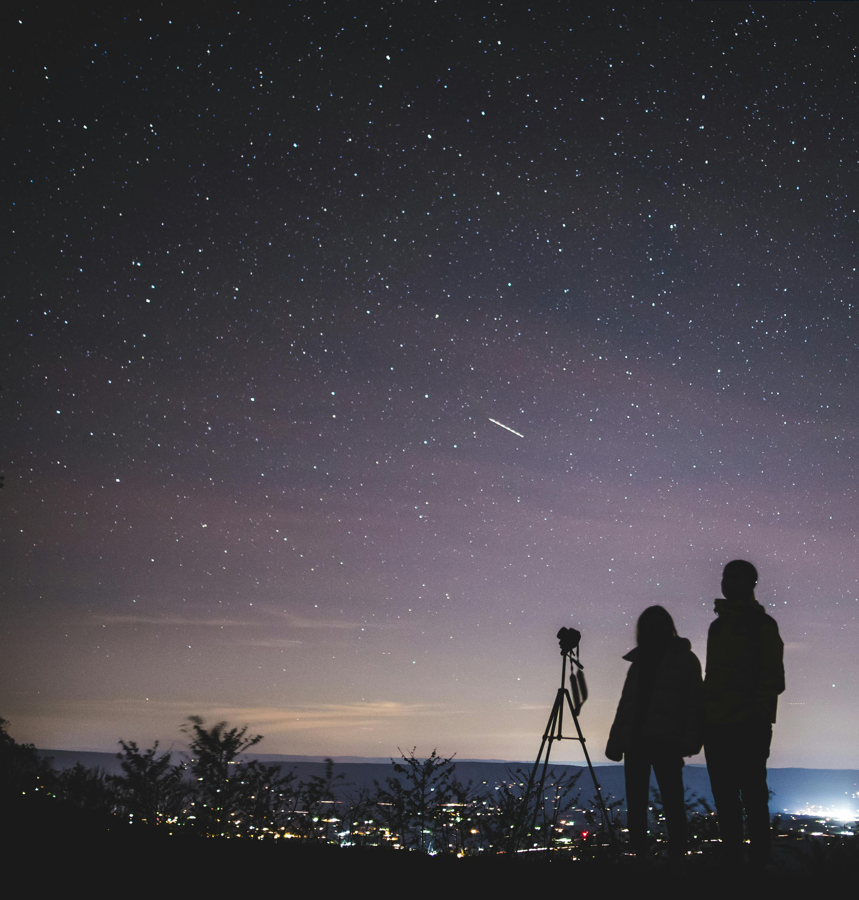
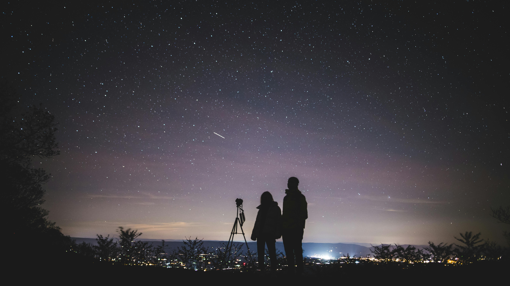
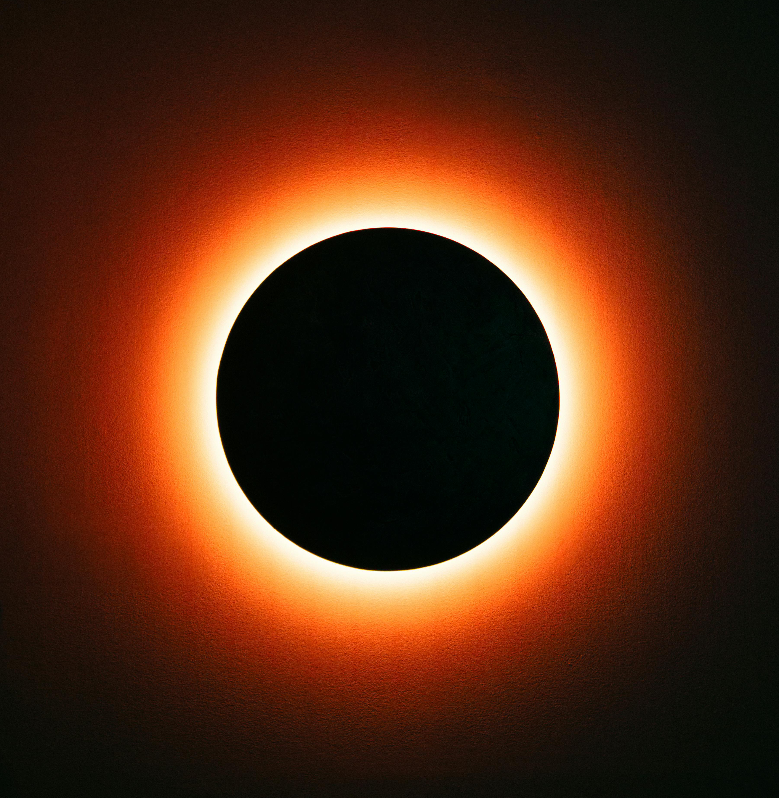
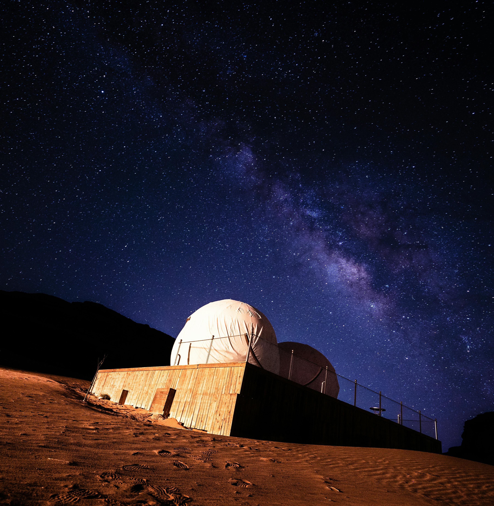
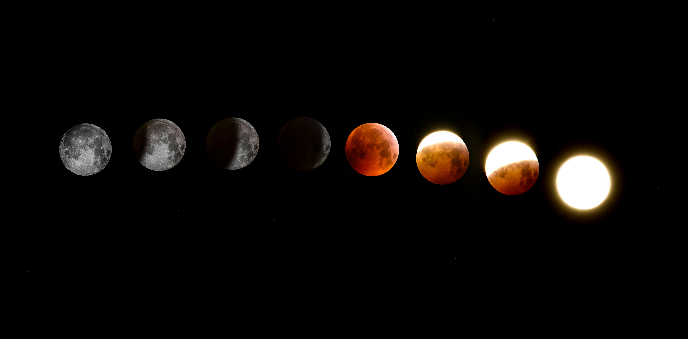
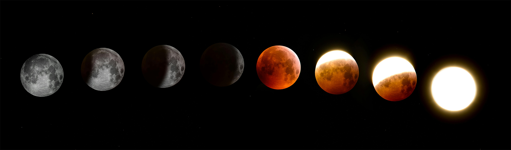

Conoce mas sobre el mundo que te rodea
Hola paco
Los eventos astronómicos y las condiciones meteorológicas hacen que cada viaje tenga una fecha cuidadosamente seleccionada. Gracias a ello, podrás disfrutar de cielos más despejados, mejores vistas y una experiencia única para observar y aprender sobre el universo en el momento perfecto.


A que nos dedicamos
Eventos especiales

Eclipses
Los eclipses son fenómenos astronómicos poco frecuentes y espectaculares. Por ello, organizamos viajes en fechas y lugares estratégicos donde la visibilidad sea óptima. Durante la experiencia, podrás observar el eclipse de forma segura acompañado de guías e información especializada para comprender mejor este evento único.
Aprendiendo del espacio
Este apartado está dedicado a actividades educativas y culturales relacionadas con el universo. Realizamos visitas a observatorios, museos y centros especializados, además de asistir a charlas y talleres impartidos por profesionales y aficionados de la astronomía. Una experiencia pensada para aprender, descubrir y compartir conocimientos sobre el espacio.

Fases lunares
Las fases de la Luna son los cambios de apariencia que presenta la Luna a lo largo del
mes
debido a la posición que ocupa respecto al Sol y la Tierra. Aunque la Luna siempre está
iluminada por el Sol, desde nuestro planeta solo podemos observar una parte de esa iluminación,
lo que provoca que su forma visible cambie progresivamente.
El ciclo lunar comienza con la luna nueva, fase en la que la Luna apenas es visible desde la
Tierra. Después aparece el cuarto creciente, donde comienza a iluminarse parcialmente hasta
llegar a la luna llena, momento en el que la cara visible está completamente iluminada.
Finalmente, la iluminación disminuye durante el cuarto menguante hasta regresar nuevamente a la
luna nueva.
Este proceso completo se repite aproximadamente cada 29 días y ha sido observado e
interpretado
por numerosas culturas a lo largo de la historia, tanto desde el ámbito científico como
simbólico y astronómico.



Auroras boreales
¿Sabías que las auroras boreales son un fenómeno luminoso que puede observarse en el cielo nocturno de las regiones cercanas al Polo Norte?
Se producen cuando partículas cargadas procedentes del Sol chocan con la
atmósfera terrestre y reaccionan con los gases que la componen. Este proceso genera luces
visibles que se desplazan y cambian de forma en el cielo, creando patrones ondulantes que pueden
presentar tonos verdes, rosados, violetas o azulados.
Su aparición está directamente relacionada con la actividad solar y con el campo magnético de la
Tierra, que canaliza estas partículas hacia las zonas polares. Por este motivo, son más
frecuentes en países del norte, como Noruega, Islandia o Suecia, especialmente durante los meses
en los que las noches son más largas y oscuras, entre finales de septiembre y finales de marzo.
Este fenómeno ha sido observado durante siglos y ha dado lugar a numerosas interpretaciones
culturales, aunque hoy se entiende como un proceso físico ligado a la interacción entre el Sol y
la atmósfera terrestre
Lluvia de estrellas
¿Qué es una lluvia de estrellas? Una lluvia de estrellas es un fenómeno astronómico en el que pequeñas partículas procedentes de cometas o asteroides entran en la atmósfera terrestre y se desintegran, produciendo destellos luminosos conocidos como estrellas fugaces.
Cómo se producen Ocurren cuando la Tierra atraviesa restos de material espacial. Estos fragmentos, llamados meteoroides, entran a gran velocidad en la atmósfera y, al rozar con el aire, se calientan y se desintegran, generando trazos brillantes en el cielo. El punto desde el que parecen originarse se denomina radiante.
Principales lluviasn
Las lluvias de estrellas se diferencian por la cantidad de meteoros que pueden observarse en una
hora. Algunas de las más conocidas son:
- Perseidas: visibles en agosto, una de las más intensas y populares.
- Gemínidas: activas en diciembre y originadas por el asteroide 3200 Phaethon.
- Cuadrántidas: ocurren en enero y destacan por sus meteoros brillantes.
- Leónidas:en noviembre, conocidas por producir bólidos muy luminosos.
- Líridas:en abril, con meteoros rápidos y visibles.
Observación Se pueden ver en fechas concretas del año, preferiblemente desde lugares oscuros y sin contaminación lumínica. La fase de la Luna y las condiciones del cielo influyen mucho en su visibilidad.

Luminiscencia
¿Sabías que en algunas noches la playa de San Lorenzo puede mostrar un fenómeno luminoso conocido como bioluminiscencia?
La bioluminiscencia es un fenómeno natural producido por ciertos microorganismos marinos, como
el fitoplancton, que son capaces de emitir luz cuando se produce movimiento en el agua. Este
efecto se genera gracias a reacciones químicas internas que transforman energía en luz visible,
creando destellos azulados o verdosos en la superficie del mar.
En condiciones específicas, como noches cálidas, aguas tranquilas y alta concentración de estos
organismos, el oleaje o incluso el simple movimiento de las olas puede provocar que el mar
parezca brillar en la oscuridad. Este fenómeno es poco frecuente y depende de múltiples factores
ambientales, por lo que no siempre puede observarse.
La playa de San Lorenzo, en determinadas ocasiones, ofrece este espectáculo natural que
convierte el paisaje nocturno en una experiencia visual única, donde el mar parece iluminado
desde su interior.